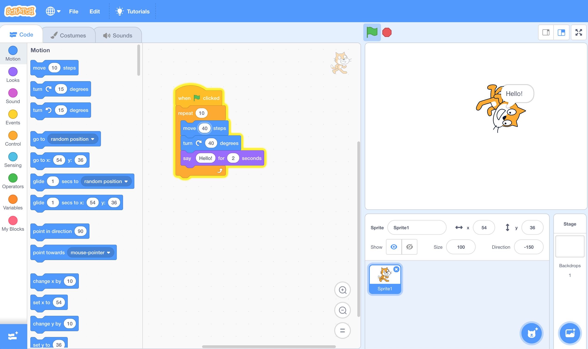

de la souris au clavier
une transition en douceur
les pratiques
du souris au clavier:
les environnements transitionnels
c'est quoi cette transition?
programmer les animations

programmer les données
const array = ['m', 'e', 'a', 'r', 'r', 'o', 'm', 'r', 'g', 'p'];
// ... quelques manipulations
array = ['m', 'e', 'r', 'r', 'a', 'm', 'r', 'o', 'g', 'p'];
// ... quelques manipulations
array = ['r', 'a', 'm', 'm', 'e', 'r', 'p', 'r', 'o', 'g'];
// ... quelques manipulations
array = ['p', 'r', 'o', 'g', 'r', 'a', 'm', 'm', 'e', 'r'];
isoler la machine notionelle
la machine notionelle?
pour comprendre l'éxécution du programme
pour éviter les malcomprehensions standards
blocs ou texte, peu d'importe
puzzles d'état
doucement vers le texte
literacy extreme
formatting & syntax precis
comprendre l'idée du programmeur
comprendre l'interpretation du machine
exprime les idées hors-du-commun
les jeux pseudo-code
toxicode: off-line
les editeurs bloc/texte
étudier le code comme texte
exercises de completion - frenchify this
les environnements transitionnels
environnement vs. tutoriel
les considerations
leurs niveaux
leurs interets
le temp disponible
langue de programmation
ta niveau
contenu & infrastructure existant
...
objectives d'apprentisage
objectives d'apprentisage
blocs au text
l'execution du programme
CS & analyse des données
dévelopement software
le web
preparer pour enseigner
pedagogical content knowledge
les malcomprehensions commun
les erreurs common
correler les deux
etudier === preparer
starter-code est tres effectives
petits changements font une grande difference
faciles a crées
tu les connais bien
projects integratives
explore le problème sans code
discute l'idée du modelisation
coding is not about code
choisis des projects interessant
prepare les interactions off-line
travaille en groups
avoir une presentation des erreurs
avoir une presentation du solution
du souris au clavier: